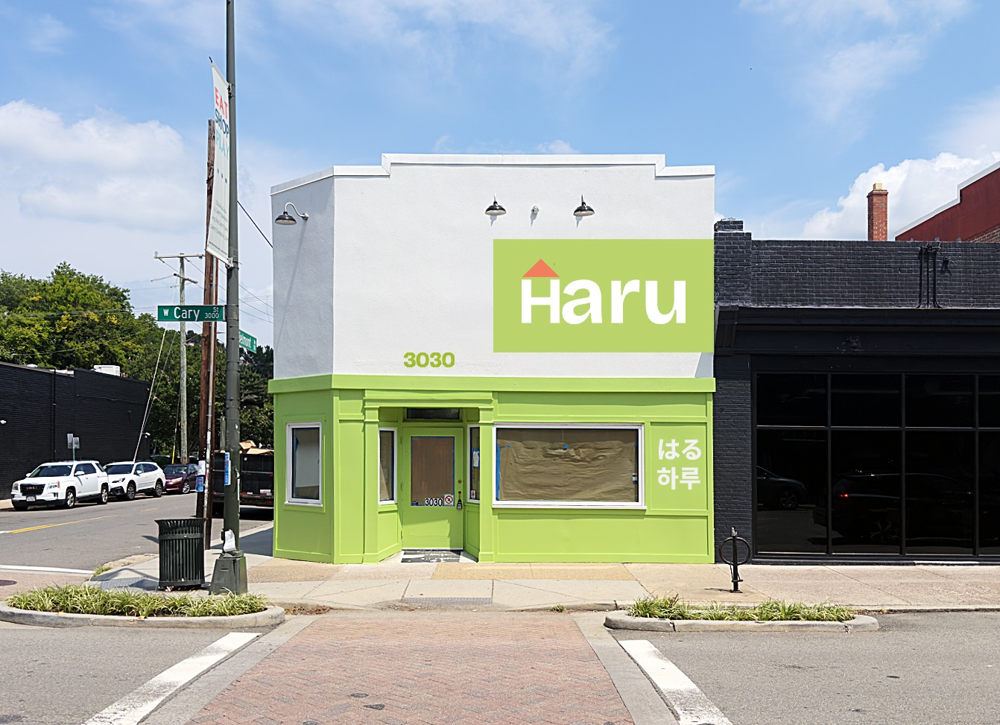

Your storefront, ready to paint
Five hand-painted signs, with the outside finished before you open on the 20th. Below is the picture to check and the short list of what I need to start.

Where we landed
What I understood yesterday
- Paint the front wall before opening day. Triangle stays, orange, above the name. Green panel set to the side.
- The corner sign is included, but it is still a rough draft waiting on your real font. Nothing to decide about it today.
- The sign inside, behind the register, is included. I can do it before you open if I can get in.
- Nothing on the Belmont wall for now. Lea, I agree with you. That wall deserves something better later, not a rushed copy.
If any line above is wrong, tell me and I will fix it today. Nothing gets painted until you say this picture is right.
What is holding this up
I need the real artwork to start
Saying yes is only half of it. The small picture files were fine for these previews, but I cannot paint from them. To print your letters at full size and punch the patterns, I need the files the logo was actually built in.
Four things, and two of them are quick
Email is easiest: hello@untitledmixedmedia.com
Everything in your $5,000
Five signs, written down
This is what those files turn into. The same list, word for word, goes on your invoice.
After you say yes
Your week
Once the deposit and the artwork are both in hand, the outside takes 5 to 7 working days. That is when the clock starts, not before.
- StartDeposit and artwork arrive. I print your letters at full size and punch the patterns.
- Day 2Patterns finished and checked against my wall measurements.
- NightThe design goes onto the wall around 2:30am, when Cary Street is quiet and the sidewalk is clear.
- Day 3 to 5Painting. The Haru sign, the 3030, and the Japanese and Korean writing.
- Day 6Touch ups, then we walk the building together and check every letter.
- Aug 20You open, with the outside finished.
The one item without a date
The corner sign is still a draft
 Rough draft
Rough draft
What you see here is a working draft, not a finished design. Those letters are a stand-in font, not yours. Kim is right that this should be set in your real font, so I am not calling it done until I have one in my hands.
When the font arrives I finish the layout and show it to you before anything is painted. Or your own designer can lay it out, which is genuinely fine with me, as long as it stays simple: the same four lines, white letters, no extra colors.
Either way it is already paid for inside your price, and there is nothing to decide about it today. It is one ladder and one short visit, whenever you are ready.
Not on the invoice, still yours
Four things I am not charging you for
- Every round of design so far The green panel, the triangle placement, the color of the 3030, the crossbar on Kim's J, the corner draft. None of that was billed and none of it will be.
- Photographs of the finished storefront When the outside is done I shoot it properly and send you the files. Use them for your Google listing, your menus, your Instagram. No charge, no credit needed.
- A year of workmanship coverage If anything I painted lifts, peels, or fades inside the first year, I come back and fix it. That one is on me.
- Insurance on every day I am on your building I carry general liability, and the certificate goes out with your invoice. Nothing that happens on that sidewalk is your exposure.
One more thing worth knowing. This is paint, not vinyl. Vinyl lifts at its edges and goes chalky after a few summers. Richmond still has hand-painted walls from a hundred years ago that you can read today.
How I work
Three things I will not do to you
- I will not paint anything until you tell me this picture is right. Paint is permanent, so we agree on the picture first. That is the whole reason this page exists.
- I will not charge you for anything that is not on the list above. If you ask for a change, you get a price in writing before a brush touches the wall.
- I will not ask for the balance until you have walked the building with me. Anything you point at, I fix, at my cost. You pay the rest when you are happy with every letter.
That is how I have worked on every wall I have painted, and it is how I will work on yours. Spencer Bennett, Untitled Mixed Media
Money
Two payments, no surprises
What "the outside is finished" means: the Haru sign, the 3030, and the Japanese and Korean writing are painted and you are happy with them. That is the work I control, and it is what I am promising you before opening day.
The corner sign and the inside sign are already paid for inside this price. Both of them wait on things that are not in my hands, your font and a key to the room, so they get scheduled on their own and they do not change the two payments above. Neither one is ever billed again.
One tap
Is the picture right?
If the artwork reaches me today, you open on the 20th with the outside finished. Every day it is late moves that date, and that is the only real deadline in this whole project.
Your invoice comes back within the hour, with the five signs listed on it exactly as they are written above.